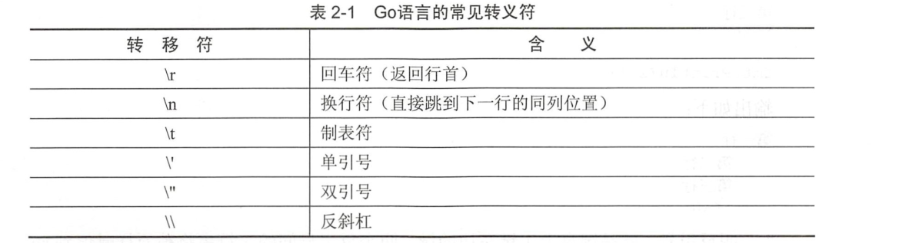

1.2. 数据类型¶
Go语言的基本数据类型和其他语言的大同小异。
1.2.1. 整型¶
整型分为两个大类
* 按长度分为：int8、int16、int32、int64
* 对应的无符号的整型：uint8、uint16、uint32、uint64
uint8 就是我们熟知的byte型
uint16 对应C语言中的short型
uint64 对应C语言中的long型
1.2.2. 浮点型¶
Go语言支持两种浮点类型： float32和float64.两种浮点类型格式遵循IEEE754标准
float32的浮点数的最大范围约为 3.4e38，可以使用常量定义：math.MaxFloat32。
float64的浮点数最大范围约为 1.8e308,可以使用一个常量定义：math.MaxFloat64。
打印浮点数，使用格式化%f
package main
import (
"fmt"
"math"
)
func main() {
fmt.Printf("%f\n", math.Pi) //3.141593
fmt.Printf("%.2f\n", math.Pi) //3.14
}
1.2.3. 布尔型¶
布尔型数据在Go语言中以bool类型进行声明，布尔数据只有true和false两个值
1.2.4. 字符串¶
字符串的值为双引号中的内容，可以在Go语言的源码中直接添加非ASCII码字符，代码如下：
str := "hello world"
ch := "中文"
1.字符串转义符 
Go语言源码中使用转义符代码如下：
package main
import (
"fmt"
)
func main() {
fmt.Println("str := \"c:\\Go\\bin\\go.exe\"") //str := "c:\Go\bin\go.exe"
}
1.2.5. 格式化动词打印¶
| 动词 | 输出 |
|---|---|
| %f | 浮点数 |
| %d | 十进制整数 |
| %s | 字符串 |
| %t | 布尔值(true、false) |
| %v | 任何值，根据所提供的值的类型选择适当的格式 |
| %#v | 任何值，按Go程序中显示的格式进行格式化 |
| %T | 所提供值的类型（int float….） |
| %% | 一个% |
package main
import "fmt"
func main() {
fmt.Printf("A float: %f\n", 3.1415) //A float: 3.141500
fmt.Printf("An integer: %d\n", 15) //An integer: 15
fmt.Printf("A string: %s\n", "hujianli") //A string: hujianli
fmt.Printf("A boolean %t\n", true) //A boolean true
fmt.Printf("Values: %v %v %v\n", 1, "\t", true) //Values: 1 true
fmt.Printf("Values: %#v %#v %#v\n", 1, "\t", true) //Values: 1 "\t" true
fmt.Printf("Types: %T %T %T\n", 1, "\t", true) //Types: int string bool
fmt.Printf("Percent sign: %%\n") //Percent sign: %
}
对比%v和%#v，%#v可以显示一些值，如果不使用%#v的话，这些值可能会在输出中被隐藏。
格式化值宽度¶
package main
import "fmt"
func main() {
fmt.Printf("%12s | %s\n", "Product-Master", "Cost in Cents")
fmt.Println("----------------------------------------------")
fmt.Printf("%12s | %2d\n", "Product_A", 50)
fmt.Printf("%12s | %2d\n", "Product_B", 5)
fmt.Printf("%12s | %0.2f\n", "Product_C", 99.1193) //这里会四舍五入 //99.12
fmt.Printf("%%7.3f: %7.3f\n",12.4354231244) //%7.3f: 12.435
fmt.Printf("%%7.2f: %7.2f\n",12.4354231244) //%7.2f: 12.44
fmt.Printf("%%7.1f: %7.1f\n",12.4354231244) //%7.1f: 12.4
fmt.Printf("%%.1f: %.1f\n",12.1234567) //%.1f: 12.1
fmt.Printf("%%.2f: %.2f\n",12.1234567) //%.2f: 12.12
}
1.2.6. 字符¶
Go语言的字符有以下两种:
· 一种是uint8类型，或者叫byte型，代表ASCII码的一个字符。
· 另一种是rune类型，代表一个UTF-8字符，当要处理中文、日文或者其他复合字符时，则需要用到rune类型。
rune类型实际是一个int32
fmt.Printf中的”%T”动词可以输出变量的实际类型。
package main
import "fmt"
func main() {
var a byte = 'a'
fmt.Printf("%d %T\n", a, a) //97 uint8 byte类型的a变量实际类型是uint8.对象的ASCII码为97
var b rune = '你'
fmt.Printf("%d %T\n", b, b) //20320 int32 b变量的实际类型是int32.对应的Unicode码就是20320
}
UTF-8和Unicode 有何区别？¶
Unicode 是字符集。ASCII 也是一种字符集。字符集为每个字符分配一个唯一的ID ， 我们使用到的所有字符在Unicode 字符集中都
有唯一的一个ID 对应， 例如上面例子中的a 在与ASCII 中的编码都是97 。“ 你”在Unicode 中的编码为20320 ，
但是在不同国家的字符集中， “ 你” 的ID 会不同。而无论任何情况下， Unicode 中的字符的ID 都是不会变化的。
UTF-8 是编码规则， 将Unicode 中字符的ID 以某种方式进行编码。UTF-8 的是一种变长编码规则， 从1 到4 个字节不等。编码规则如下：
· 0xxxxxx 表示文字符号0 ～ 127 ， 兼容ASCII 字符集。
· 从128 到0x10ffff 表示其他字符。
根据这个规则， 拉丁文语系的字符编码一般情况下， 每个字符依然占用一个字节， 而中文每个字符占用3 个字节。
广义的Unicode 指一个标准， 定义字符集及编码规则， 即Unicode 字符集和UTF-8 、
UTF-16 编码等。
1.2.7. 切片¶
package main
import "fmt"
func main() {
// T代表切片元素类型，可以是整型、浮点型、布尔型、切片、map、函数等
a := make([]int, 3) //创建一个容量为3的整型切片
a[0] = 1
a[1] = 2
a[2] = 3 //为切片元素赋值
str := "hello hujianli"
fmt.Println(str[6:]) //hujianli
}
1.2.8. 转换不同的数据类型¶
Go语言使用类型前置加括号的方式进行类型转换，一般格式如下：
T(表达式)
其中，T代表要转换的类型，表达式包括变量，复杂算子和函数返回值等。
package main
import (
"fmt"
"math"
)
func main() {
fmt.Println("int8 range:", math.MinInt8, math.MaxInt8)
fmt.Println("int16 range:", math.MinInt16, math.MaxInt16)
fmt.Println("int32 range:", math.MinInt32, math.MaxInt32)
fmt.Println("int32 range:", math.MinInt64, math.MaxInt64)
// 初始化一个32位的整型值
var a int32 = 1047483647
fmt.Printf("int32: 0x%x %d\n", a, a) //输出变量十六进制和十进制
b := int16(a) //将变量a转换为十六进制数
fmt.Printf("int16: 0x%x %d\n", b, b) // 输出十六进制和十进制的值
var c float32 = math.Pi // 将常量保存为float32类型
fmt.Println(int(c)) // 转换为int类型，浮点发生精度丢失
}